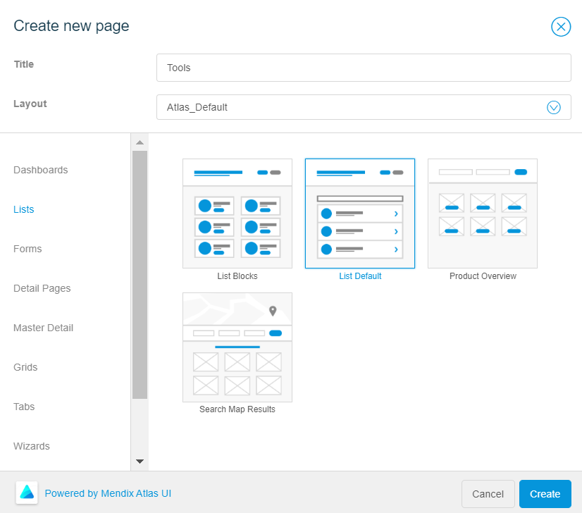

Create a Page
To create a page, follow these steps:
- In the left toolbar of the studio, click Pages .
- In the Pages sidebar, click New.
-
In the Create New Page modal window, do the following:
- In the Title box, type the page name as Tools.
- From the Layout list, select Atlas_Layout.
- In the page types, click Lists and select List Default.

- Click Create.